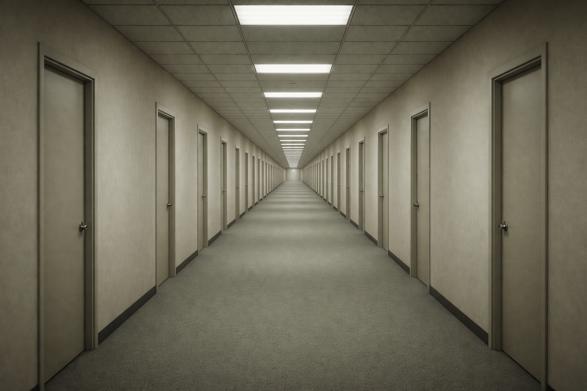
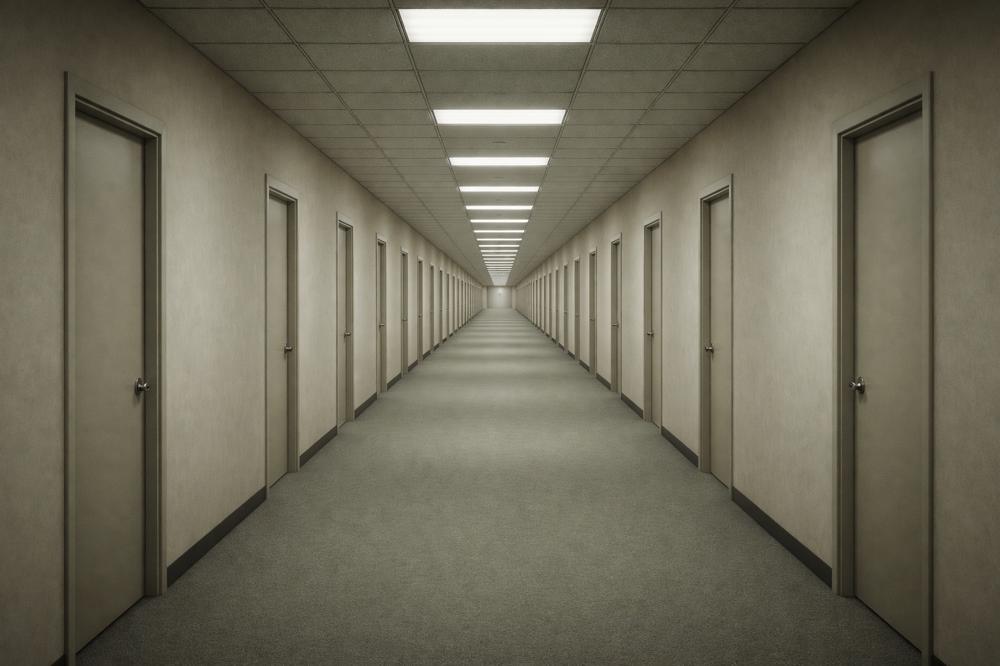

La Oficina Infinita
La Oficina Infinita es una realidad centrada en un personaje registrado como Stanley, empleado número 427. Durante un periodo indeterminado, el personaje ejecuta órdenes de forma automática, sin cuestionar su propósito ni su origen, hasta que dichas instrucciones dejan de emitirse.
A partir de ese punto, la estructura de la realidad se fragmenta. Cada decisión genera una nueva variación del mismo entorno: pasillos, oficinas y salas que se repiten con mínimas alteraciones funcionales.
El sistema detectó la presencia de una entidad narrativa dominante, responsable de describir los eventos antes de su ejecución y de reaccionar ante cualquier desviación del comportamiento esperado. No se ha determinado si esta entidad controla la realidad o si constituye una manifestación interna de la misma.
La Oficina Infinita no presenta un cierre definitivo. Cada intento de escape, resistencia o desobediencia provoca un reinicio parcial de la estructura narrativa, manteniendo activo el conflicto entre control, elección y la ilusión del libre albedrío.
 
